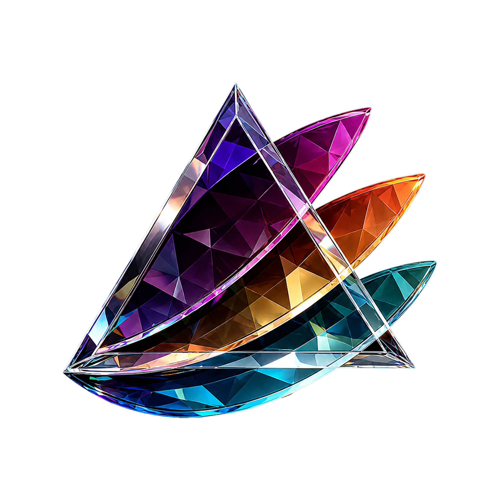

PRISM THEME · 07投稿中
霓虹之后After the neon fades
当光源离开画面，色彩还会留下些什么？本期请围绕“余光、残影与夜色中的呼吸”进行创作，题材与拍摄方式不限。

Prism ShotPhotography Club每期围绕一个主题展开摄影赛。投稿与投票在社群内完成，官网负责呈现赛程与获奖作品。
以下主题、日期和链接均为原型演示数据，正式上线前由社团内容配置替换。
当光源离开画面，色彩还会留下些什么？本期请围绕“余光、残影与夜色中的呼吸”进行创作，题材与拍摄方式不限。
状态会按照 Asia/Shanghai 时间自动切换为“即将开始 / 投稿中 / 等待投票 / 投票中 / 已结束”。原型日期仅用于演示状态逻辑。
这里只展示主题、冠军作品与作者展示名。作品图为原型占位素材。